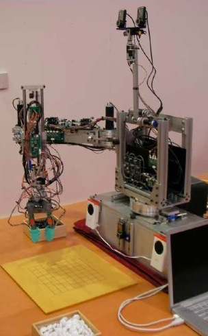
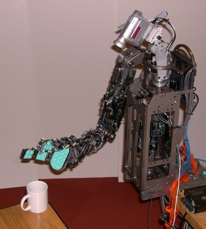
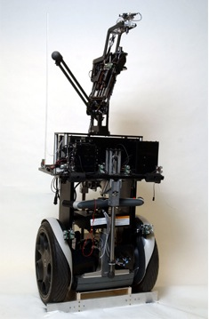
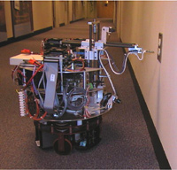
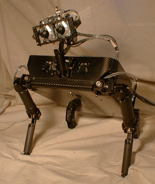
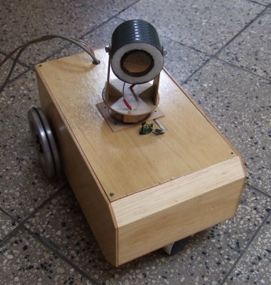

Robots
|  |
GoBot This is my most recent robot project. Its goal was shown Precision Sensitive Manipulation. (This page is being updated.) |
|  |
Obrero This robot was used to developed Sensitive Manipulation. (This page is being updated.) |
|  |
Cardea This is a robot capable of openning doors. In this project some member of the team I got to design and built overall architecture of this robot. We built specific hardware to drive the base using small microcontrollers and control the navigation using vision. Information about the other parts of the robot and more details can be found in the previous link. |
|  |
Self-feeding robot I desgined and built two version of this robot for my SM thesis. This robot was invited to participate in the WIRED NextFest 2004 event. |
|  |
Coco A gorilla-like robot built by the Coco team. I was involved in implemting the electronics and several subsystems of the robot. Problems such as motor control, VOR , force control, sound localization were addressed. Currently, we are addressing manipulation issues. A video of Coco in action can be found here[312 Mb]. |
|  |
Undergrad Thesis This robot was my undergrad thesis. Together with my classmate, we designed and built this robot out of wood. It uses step motors and it has an ultrasound sensor. (This page is being updated.) |
Eduardo Torres-Jara Last modified: Wed Dec 1 13:00:09 EST 2004